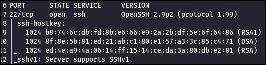

Enumerating SSH.
First, I want to let you know that SSH isn't really exciting, because there isn't a lot of oppurtunities for remote code executio. So we;ll really have to do brute force and spray.
From the original scan, we saw that SSH was open. We're going to attempt to connect to SSH, to this specific port and see if we getany information aboutwhat's running, and that's it. If we try to make an attempt to login, then it becomes exploitation and we'll save thatfor the exploitation section of the course, so we're just going to sniff around it without touching anything.

To ssh, you just type in ssh and the IP adress you want to ssh to, like this:

But because the Kioptrix box is old we get this message:

So we're going to use a slightly different syntax, it's not common but very useful to have.


Which results in a no matching cipher found error, so we'll have to add a -c to the command and paste in their first offer from the error. Like this:

This should now give us the oppurtunity to connect:

Type in yes and hit enter. It asks us for a password, which we obviously don't have, so there is nothing here for us. Hit ctrl + c to exit.

We attempted to make this connection because, sometimes a banner is exposed and would say what version of SSH it;s running and who it was built by. Unfortuntely, we didn't get a banner but fortunenately, when we did our initial scan, we were able to get version2.9p2

This is it for SSH, remember I said, it wasn't fun? I wasn't kidding.